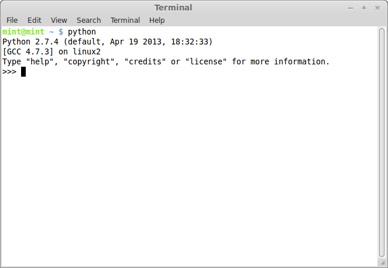

The Python Shell
Once your computer is booted into Linux Mint, open a terminal, type `python`, and hit ENTER.

You've now entered the Python shell. You can begin entering Python commands, and the computer will interpret and execute them.
You can use all of the types we mentioned last time (numbers, strings, arrays/lists, dictionaries/hashes, functions/methods/procedures, and classes) to create scripts or programs from here.
For instance, we could assign the number `14` to the variable `a`.
|
>>> a = 14
|
The `>>>` marks don't mean anything, really. They're just an indication to you that you're working in the Python shell as opposed to the regular shell. Anyway, now if we ask Python for `a`, it will return `14`.
|
>>> a
14
|
If we assigned, say, `15` to the variable `b`, then we could do some math with them.
|
>>> b = 15
>>> a + b
29
>>> a * b
210
|
We can also work with strings.
|
>>> c = 'foo'
>>> d = 'bar'
>>> c + d
'foobar'
|
Or arrays.
|
>>> e = [1, 2, 3]
>>> e
[1, 2, 3]
>>> f = ['x', 'y', 'z']
>>> e + f
[1, 2, 3, 'x', 'y', 'z']
|
One of the interesting things that we can do with strings and arrays is to ask for only part of them. But we first need to understand some things about how Python (and many other computer languages) deal with the elements in a list. Every element in a list has an ~index~ (its location in the list) and a ~value~ (the thing it's holding). For instance, the list `f` in the previous example code contains three elements. The first element in `f` has an index of `0` and a value of `'x'`. The second element in `f` has an index of `1` and a value of `'y'`. The third element in `f` has an index of `2` and a value of `'z'`.
It may seem odd to think of the first element in a list as having an index of `0`, but this is actually an extremely common convention among programming languages. To retrieve an element from the list, we insert the index number in square brackets after the name of the list, like this:
|
>>> f[0]
'x'
>>> f[1]
'y'
>>> f[2]
'z'
|
You can even get a range of elements by using the syntax `listName[startIndex:endIndex]`. The only unusual thing to note about this syntax is that, when you request elements this way, you'll get all of the elements from the `startIndex` up to _but not including_ the element at `endIndex`. For example:
|
>>> g = [14, 32, 67, 89, 22, 45]
>>> g[1:4]
[32, 65, 89]
|
Lastly, we can get elements of a string in exactly the same way.
|
>>> s = 'Hello, world!'
>>> s[0:5]
'Hello'
|